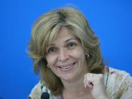

Кандидат у Президенти України Ольга Богомолець

підтримка : 0.17%
О́льга Вади́мівна Богомо́лець (нар. 22 березня 1966) — український політична і громадська діячка,
лікарка-дерматолог. Народний депутат України з 2014. Голова комітету Верховної Ради України з
питань охорони здоров'я. Кандидат у Президенти України на виборах 2014 року. Заслужений лікар України,
доктор медичних наук (2003), професор (2007). Головний лікар Інституту дерматології та косметології
(2003—2014), особистий лікар Віктора Ющенка (2004—2005). Координатор Європейської асоціації лазерної
дерматології у Східній Європі, член Американської академії дерматології Європейської академії
дерматології та венерології. Засновник і власниця комплексу «Замок Радомисль». Автор понад 70
наукових праць і 14 патентів на винаходи у сфері дерматології. Капітан запасу медичної служби.
Співачка, лауреат українських музичних конкурсів.